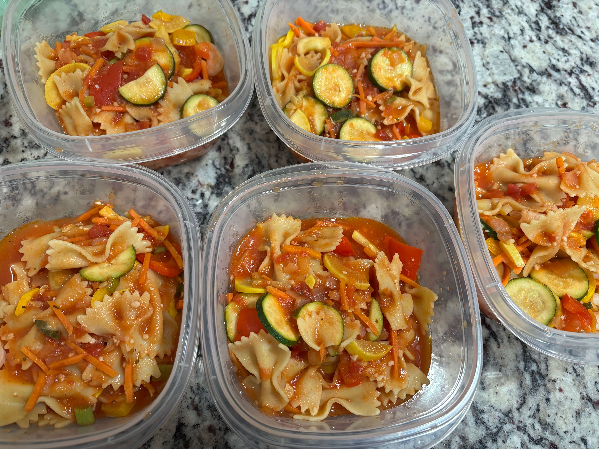

Home
Pasta Primavera

Ingredients
- Matchstick carrots
- 2 Medium zuchinis chopped
- 2 yellow squash chopped
- 1 onion chopped
- 1 yellow bell pepper chopped
- 1 red bell pepper chopped
- 1/4 cup olive oil
- Kosher salt and black pepper
- 1 tablespoon dried italian herbs
- Garlic powder
- 1 lb bowtie pasta
- 1/2 cup grated parmesan
- 1 cup patite tomatoes
- 1 can tomato paste
- 1 can low sodium chicken broth
- 1 bunch scallions
- 4 cloves garlic
- Crushed red pepper
- Oregano
- Deveined detailed shrimp
Steps
- Cook the pasta according to the package and drain
- Put the oil in a different pot and let it get hot then add the carrots and onion. Let it cook for a few minutes then add the rest of the veggies and chicken broth. Add the spices and be very generous. Bring it to a boil then turn the heat down and let it simmer
- Defrost shrimp and cook it in boiling water for 5 min